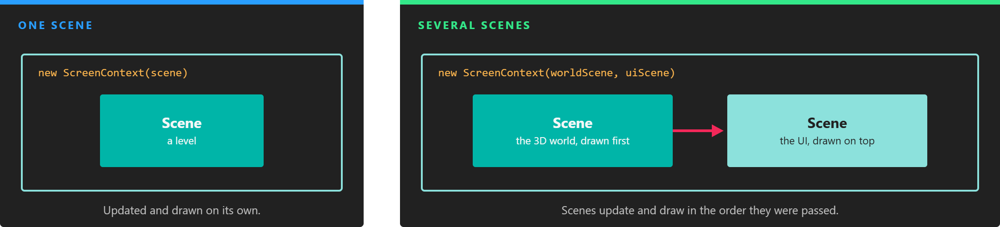
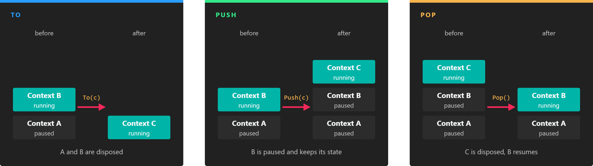

ScreenContext Manager

A screen context is the set of scenes that play together. It can hold a single scene or several, such as the game world and its UI.
The ScreenContextManager is the service that decides which scenes are playing. It does not work with scenes directly but with screen contexts: groups of scenes that are loaded, updated and drawn together. The manager keeps a stack of them, so you can replace everything that is playing, or put something on top (a pause menu, a dialog) and come back to where you were.
Navigation happens only from code. Evergine Studio edits scenes, but the order in which they play is decided by your application.
ScreenContext
A ScreenContext is created from one or more scenes:
// A context with a single scene. It gets a generated name.
var gameContext = new ScreenContext(gameScene);
// A named context that plays two scenes: the 3D world first, its UI on top.
var hudContext = new ScreenContext("Game", gameScene, uiScene);
| Member | Description |
|---|---|
| Name | The name used by ScreenContextManager.FindContextByName(). If you do not give one, the context is named ScreenContext0, ScreenContext1, and so on. |
| Behavior | A ScreenContextBehaviors value that says what the context does while another one is on top of it. None by default. See ScreenContext Behaviors. |
| Count | The number of scenes in the context. |
| this[int] | The scene at the given index. Scenes are updated and drawn in this order. |
| FindScene<T>() | Returns the first scene of type T. |
| FindScenes<T>() | Returns every scene of type T. |
Load a Scene and Play It
To play a scene asset, load it with the AssetsService and navigate to a context that contains it. The template does it in MyApplication.Initialize():
public override void Initialize()
{
base.Initialize();
var screenContextManager = this.Container.Resolve<ScreenContextManager>();
var assetsService = this.Container.Resolve<AssetsService>();
// Loading a .wescene asset creates an instance of the class you ask for (MyScene here)
// and fills it with the entities saved in the asset.
var scene = assetsService.Load<MyScene>(EvergineContent.Scenes.MyScene_wescene);
var screenContext = new ScreenContext(scene);
screenContextManager.To(screenContext);
}
A context with several scenes is built the same way. This one plays the game world and draws a separate UI scene over it:
var mainScene = assetsService.Load<MainScene>(EvergineContent.Scenes.MainScene_wescene);
var uiScene = assetsService.Load<UIScene>(EvergineContent.Scenes.UIScene_wescene);
screenContextManager.To(new ScreenContext(mainScene, uiScene));
MainScene and UIScene are classes of your project that derive from Scene (see Create Scenes). A scene without custom code can be loaded as a plain Scene.
Note
The AssetsService caches what it loads: loading the same scene twice returns the same instance. If the first instance was disposed by a navigation, call Load<T>(id, forceNewInstance: true) to get a new one.
Navigate Between ScreenContexts

Only the context at the top of the stack runs. The ones below are paused, unless their Behavior says otherwise.
| Method | Description |
|---|---|
| To(ScreenContext nextContext, bool doDispose = true) | Removes every context in the stack and plays nextContext. With doDispose set to true, the scenes that are not part of nextContext are disposed. |
| Push(ScreenContext nextContext) | Pauses the current context and plays nextContext on top of it. The paused context keeps its state. |
| Pop(bool doDispose = true) | Removes the context at the top of the stack and resumes the one below. With doDispose set to true, its scenes are disposed. Popping the last context throws an InvalidOperationException. |
| FindContextByName(string name) | Returns the context in the stack with that name, or null. |
| CurrentContext | The context at the top of the stack, or null when the stack is empty. |
The manager also raises two events: OnActivatingScene when a scene starts playing, and OnDesactivatingScene when a scene stops playing because its context left the stack.
Note
To(), Push() and Pop() do not navigate immediately. They queue a command that the manager executes at the start of its next update, one command per frame. The scene that called them finishes its current frame normally.
Tip
Pass doDispose: false when you plan to come back to the scenes you leave, for example a main menu that you show again later. You are then responsible for disposing them when they are no longer needed.
ScreenContext Behaviors
When a context is paused, its scenes stop updating and are no longer drawn. The Behavior field changes that for the context it is set on:
| Value | Description |
|---|---|
None |
The default. A paused context neither updates nor draws. |
UpdateInBackground |
The scenes of the context keep updating while another context is on top of it. |
DrawInBackground |
The scenes of the context keep drawing, below the context on top, while it is paused. |
ScreenContextBehaviors is a flags enum, so both values can be combined:
var gameContext = new ScreenContext("Game", gameScene)
{
Behavior = ScreenContextBehaviors.UpdateInBackground | ScreenContextBehaviors.DrawInBackground,
};
Example: A Pause Menu
A pause menu is the typical use of Push and Pop: the game stops, stays visible behind the menu, and resumes exactly where it was.
First, give the game context DrawInBackground when you navigate to it, so it keeps drawing while it is paused:
public override void Initialize()
{
base.Initialize();
var screenContextManager = this.Container.Resolve<ScreenContextManager>();
var assetsService = this.Container.Resolve<AssetsService>();
var gameScene = assetsService.Load<MyScene>(EvergineContent.Scenes.MyScene_wescene);
var gameContext = new ScreenContext("Game", gameScene)
{
// Not UpdateInBackground: the game must freeze while the menu is open.
Behavior = ScreenContextBehaviors.DrawInBackground,
};
screenContextManager.To(gameContext);
}
Then add this behavior to any entity of the game scene. It opens the menu when the player presses Escape:
using System;
using Evergine.Common.Input;
using Evergine.Common.Input.Keyboard;
using Evergine.Framework;
using Evergine.Framework.Services;
namespace MyProject
{
public class OpenPauseMenu : Behavior
{
[BindService]
private GraphicsPresenter graphicsPresenter;
[BindService]
private AssetsService assetsService;
[BindService]
private ScreenContextManager screenContextManager;
protected override void Update(TimeSpan gameTime)
{
var keyboard = this.graphicsPresenter.FocusedDisplay?.KeyboardDispatcher;
// Pressing is only reported on the frame the key goes down, so the menu opens once.
if (keyboard?.ReadKeyState(Keys.Escape) == ButtonState.Pressing)
{
// Pop() disposes the menu scene, so ask for a new instance every time it opens.
var pauseScene = this.assetsService.Load<Scene>(EvergineContent.Scenes.PauseMenu_wescene, forceNewInstance: true);
this.screenContextManager.Push(new ScreenContext("Pause", pauseScene));
}
}
}
}
Finally, add this behavior to an entity of the PauseMenu.wescene scene. It closes the menu and resumes the game:
using System;
using Evergine.Common.Input;
using Evergine.Common.Input.Keyboard;
using Evergine.Framework;
using Evergine.Framework.Services;
namespace MyProject
{
public class ClosePauseMenu : Behavior
{
[BindService]
private GraphicsPresenter graphicsPresenter;
[BindService]
private ScreenContextManager screenContextManager;
protected override void Update(TimeSpan gameTime)
{
var keyboard = this.graphicsPresenter.FocusedDisplay?.KeyboardDispatcher;
if (keyboard?.ReadKeyState(Keys.Escape) == ButtonState.Pressing)
{
// Disposes the pause scene and resumes the game context below it.
this.screenContextManager.Pop();
}
}
}
}
While the menu is open, the game scene is paused: its behaviors and updatable scene managers do not run, so nothing moves, but it is still drawn because of DrawInBackground.
Tip
The camera of the pause scene draws after the game, over the same display. Set its ClearFlags to ClearFlags.Depth so that it clears only the depth buffer and the game stays visible behind the menu.